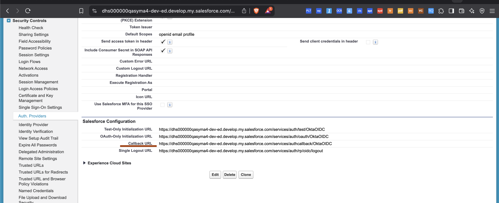
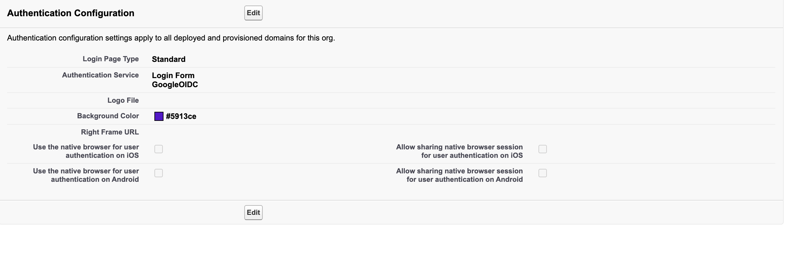
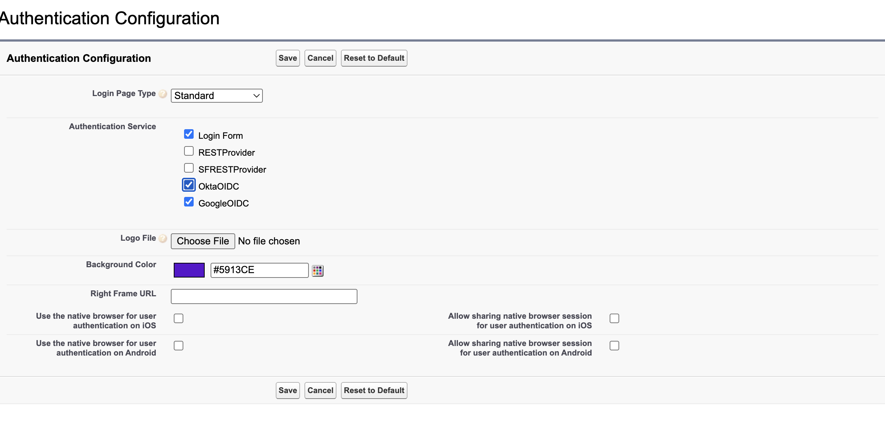
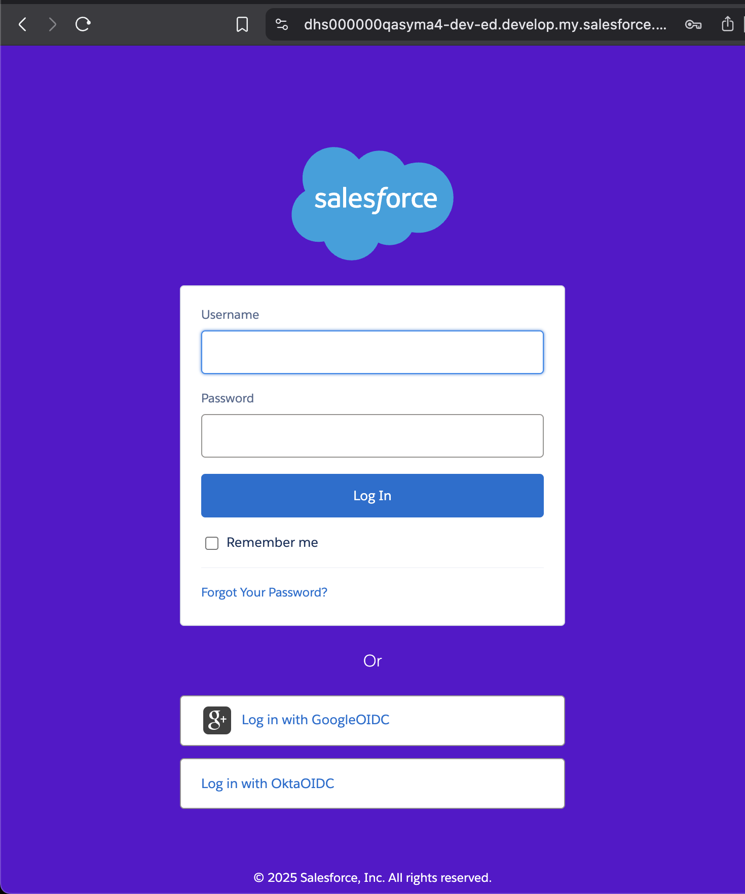

Overview
This guide walks you through setting up Okta as an OpenID Connect
Identity Provider (IdP) and configuring your Salesforce Org to
authenticate users using Okta.
Step 1: Set up an OIDC Application in Okta
- Login to your Okta admin console.
- Navigate to Applications > Applications.
- Click Create App Integration.
-
Select OIDC - OpenID Connect and
Web Application.
- Click Next.
-
Fill in the following fields:
- App name: Salesforce OIDC
-
Login redirect URIs:
https://{yourSalesforceDomain}/services/authcallback/OktaOIDC
- will be updated later with the actual domain after Step-2 completion as shown in Step-4
- Assign to group/users if necessary.
- Click Save.
Note: After saving, note down the (under General tab)
Client ID, Client Secret, and
Issuer URI. You will use these in Salesforce setup.
Step 2: Configure Salesforce as an OIDC Client
- Login to Salesforce as a System Administrator.
- Go to Setup > Auth. Providers.
- Click New.
-
Set the following:
- Provider Type: OpenID Connect
- Name: OktaOIDC
- Consumer Key: (paste Okta Client ID)
-
Consumer Secret: (paste Okta Client Secret)
-
Authorize Endpoint URL:
https://{yourOktaDomain}/oauth2/default/v1/authorize
-
Token Endpoint URL:
https://{yourOktaDomain}/oauth2/default/v1/token
-
User Info Endpoint URL:
https://{yourOktaDomain}/oauth2/default/v1/userinfo
-
Token Issuer:
https://{yourOktaDomain}/oauth2/default
-
Default Scopes:
openid profile email
-
Registration Handler: Your Apex class (see below)
- Execute Registration As: Admin user
- Click Save.
Step 3: Create an Apex Registration Handler
If you want to prevent auto user creation and only allow login for
existing users, use a class like this:
global class OktaOIDCRegistrationHandler implements Auth.RegistrationHandler {
global User createUser(Id portalId, Auth.UserData data) {
// Prevent new user creation
throw new Auth.AuthException('User creation is not allowed.');
}
global void updateUser(Id userId, Id portalId, Auth.UserData data) {
User u = [SELECT Id, Email FROM User WHERE Id = :userId];
u.Email = data.email;
update u;
}
}
Step 4: Test the Login Flow
-
After saving the Auth Provider, copy the
Callback URL.

-
In Okta, update the application and paste this URL as a
Redirect URI.
-
Create a new My Domain login page, or add a button to
use the new provider.


-
Test by clicking on the new Okta login button in the Salesforce login
screen.

Troubleshooting
-
NO_ACCESS: Unable to find a user – means the user
does not exist in Salesforce and creation is blocked.
-
Check scopes – ensure `email` and `openid` are in
Okta and Salesforce OIDC scopes.
- Check for typos in endpoint URLs.
Resources